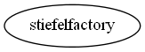

Master index
Index for manopt\manifolds\stiefel
Dependency Graph for manopt\manifolds\stiefel

Generated on Wed 25-Jun-2014 12:17:14 by
m2html
© 2005
 Master index
Master index Master index
Master index